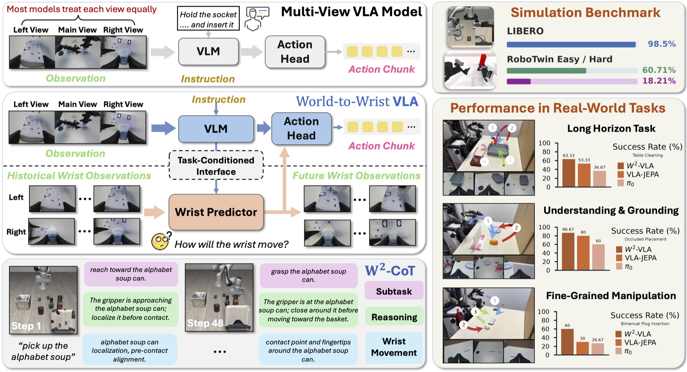

Preprint · 2026
World-to-Wrist: Task-Conditioned Future Wrist Modeling for Fine-Grained Robot Manipulation
Yuhao Pan*, Haosong Peng*, Zhengshen Zhang, Zhengyang Yan, Yalun Dai, Fushuo Huo, Chujie Wang, Tianyu Qi, Xiucheng Wang, Nan Cheng, Wenchao Xu
World-to-Wrist introduces task-conditioned future wrist modeling for multi-view vision-language-action systems. By anticipating how the robot’s wrist-camera observations will evolve before actions are executed, the model strengthens spatial grounding, long-horizon reasoning, and fine-grained manipulation in both simulation and real-world tasks.